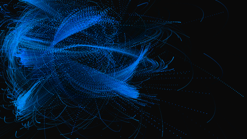

on the internet!!
BUBBLES: p5.js packed bubbles example
Here's the first stab at the packed bubbles assignment for the crunchbase data in the p5.js class. Bubbles are scaled to investment amount, colored by category, and will blow up and display labels on mouseover.
RINGS: p5.js particle example 
This piece uses particles and attractors to explore drawing with p5.js. Click anywhere in the frame to create particles, watch as the fly around. Rinse + repeat.